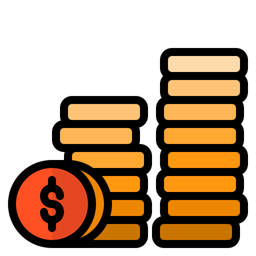

<div class='header' [hidden]="data.length === 0">
  <div class='headerTitle'> {{ tableTitle }}</div>
</div>


<div class="tableRequest mat-elevation-z3" [hidden]="data.length === 0">
  <div
    class="circle"
    matTooltipPosition="right"
    matTooltip="Počet požiadaviek v tabuľke"
    matTooltipClass="custom-tooltip"
    matTooltipShowDelay="100">
    {{ data.length }}
  </div>

  <!-- excel export button -->
  <button mat-raised-button
          color="success"
          id='excelButton'
          (click)="exporter.exportTable('xlsx', {fileName:'helpdesk_closed_requests'})"
          *ngIf="displayDownloadExcel">
    Exportovať ako Excel
  </button>

  <mat-table [dataSource]="dataSource" matTableExporter #exporter="matTableExporter" [trackBy]="trackBy"
             matSort matSortActive="id" matSortDirection="desc">

    <ng-container matColumnDef="id">
      <mat-header-cell *matHeaderCellDef [ngStyle]="{'background-color': headerColor}" mat-sort-header="id"> #
      </mat-header-cell>
      <mat-cell *matCellDef="let element" class='fontWeight'>
        {{ element.id }}.
        <ng-container [ngSwitch]="element.requestType">
          
          
          
        </ng-container>
        <span class="hideOnSmallWindow">{{ element.requestType}}</span>

        <div *ngIf="element.logs"
             (mouseleave)="removeLogs(element)"
             class="notification hideOnSmallWindow"
             matTooltipPosition="right"
             matTooltip="{{element.logs.join('. ') }}"
             matTooltipClass="custom-tooltip"
             matTooltipShowDelay="100">
          {{ element.logs.length }}
        </div>

      </mat-cell>
    </ng-container>


    <ng-container matColumnDef="additionalInformation">
      <mat-header-cell *matHeaderCellDef [ngStyle]="{'background-color': headerColor}"> Typ</mat-header-cell>
      <mat-cell *matCellDef="let element">

        <ng-container *ngIf="element.requestType === requestType.Ticket">
          {{ $any(element.extendedInformation).ticketSubtypeName }}
        </ng-container>
        <ng-container *ngIf="element.requestType === requestType.Report">
          {{ $any(element.extendedInformation).reportType }}
        </ng-container>
        <ng-container *ngIf="element.requestType === requestType.Finance">
          {{ $any(element.extendedInformation).financeType }}
        </ng-container>
      </mat-cell>
    </ng-container>

    <ng-container matColumnDef="creator">
      <mat-header-cell *matHeaderCellDef [ngStyle]="{'background-color': headerColor}"> Vytvoril</mat-header-cell>
      <mat-cell *matCellDef="let element">
        
        {{ element.creator.userShortedName }}
      </mat-cell>
    </ng-container>

    <ng-container matColumnDef="name">
      <mat-header-cell *matHeaderCellDef [ngStyle]="{'background-color': headerColor}"> Názov</mat-header-cell>
      <mat-cell *matCellDef="let element"> {{ element.name}} </mat-cell>
    </ng-container>

    <ng-container matColumnDef="priority">
      <mat-header-cell *matHeaderCellDef [ngStyle]="{'background-color': headerColor}" class="hideOnSmallWindow"
                       mat-sort-header="requestPriority"> Priorita
      </mat-header-cell>
      <mat-cell *matCellDef="let element" class="hideOnSmallWindow">
        
        
        
        {{ element.requestPriority}}
      </mat-cell>
    </ng-container>

    <ng-container matColumnDef="assigned">
      <mat-header-cell *matHeaderCellDef [ngStyle]="{'background-color': headerColor}"> Pridelené</mat-header-cell>
      <mat-cell *matCellDef="let element">
        <div *ngIf="element.assigned">
          
          {{ element.assigned.userShortedName }}
        </div>
        <div *ngIf="!element.assigned && displayAssignToMe" class='assignOnMe' (click)="assignOnMe(element)">
          pridelit mne
        </div>
      </mat-cell>
    </ng-container>

    <ng-container matColumnDef="userAction">
      <mat-header-cell *matHeaderCellDef [ngStyle]="{'background-color': headerColor}"
                       class="hideOnSmallWindow"></mat-header-cell>
      <mat-cell *matCellDef="let element" class="hideOnSmallWindow">
        <div class='removeFromMe' (click)="removeFromMe(element)">
          vzdať sa
        </div>
      </mat-cell>
    </ng-container>

    <ng-container matColumnDef="closed">
      <mat-header-cell *matHeaderCellDef [ngStyle]="{'background-color': headerColor}"> Uzatvoril</mat-header-cell>
      <mat-cell *matCellDef="let element">
        
        {{ element.closed.userShortedName }}
      </mat-cell>
    </ng-container>

    <ng-container matColumnDef="timeCreated">
      <mat-header-cell *matHeaderCellDef [ngStyle]="{'background-color': headerColor}" class="hideOnSmallWindow"
                       mat-sort-header="timestampCreation"> Vytvorené
      </mat-header-cell>
      <mat-cell *matCellDef="let element"
                class="hideOnSmallWindow"> {{element.timestampCreation | date:'dd. MM. yyyy '}} </mat-cell>
    </ng-container>

    <ng-container matColumnDef="timeClosed">
      <mat-header-cell *matHeaderCellDef [ngStyle]="{'background-color': headerColor}"
                       mat-sort-header="timestampClosed"> Uzatvorené
      </mat-header-cell>
      <mat-cell *matCellDef="let element"> {{element.timestampClosed | date:'dd. MM. yyyy '}} </mat-cell>
    </ng-container>

    <ng-container matColumnDef="details">
      <mat-header-cell *matHeaderCellDef [ngStyle]="{'background-color': headerColor}"></mat-header-cell>
      <mat-cell *matCellDef="let element">
        <button mat-button class="detailButton" [routerLink]="['/requests/request_details']"
                [queryParams]="{request_id : element.id}">
          detaily
        </button>
      </mat-cell>
    </ng-container>

    <mat-header-row *matHeaderRowDef="displayedColumns"></mat-header-row>
    <mat-row *matRowDef="let row; columns: displayedColumns;"></mat-row>
  </mat-table>

  <mat-paginator #paginator
                 [pageSize]="10"
                 [pageSizeOptions]="[5, 10, 20, 100]">
  </mat-paginator>
</div>
